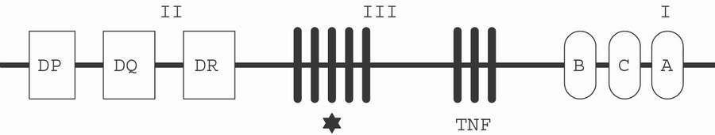
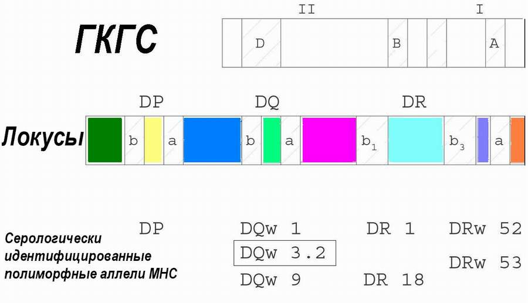

Цитокины и белки ГКГС - факторы коммуникации иммунной системы
Чрезвычайно важное значение имеют те гликопротеидные и пептидные факторы, которые производятся элементами иммунной системы и взаимодействуют с ними - неспецифические растворимые медиаторы иммунного ответа.
Это относительно небольшие по размеру молекулы, не комплементарные антигенам (хотя их продукция часто управляется антигенами).
В общем, их называют цитокины. Эти субстанции играют весьма значительную роль в иммунорегуляции. Первые из них были открыты в 1957 году, в 1969 для тех из них, которые имеют лимфоцитарное происхождение, был предложен термин “лимфокины”. Было установлено, что не только стимулированные антигенами, но и подвергнутые действию митогенов лимфоциты выделяют лимфокины. С 1979 года гликопротеидные медиаторы лейкоцит-лейкоцитарных взаимодействий стали именовать “интерлейкины”(ИЛ).
В настоящее время известно около 40 цитокинов, а полностью идентифицировано, клонировано и секвенировано, по крайней мере, 20. Все цитокины в ходе иммунологических взаимодействий работают, как аутокринные и паракринные регуляторы. В высоких дозах, образуясь при поликлональной активации иммунокомпетентных клеток, некоторые из них могут оказывать системный эффект. Уникальность цитокинов, как паракринных регуляторов, заключается в том, что большинство их клеток-мишеней циркулируют. Поэтому через локальные зоны продукции цитокинов могут проходить, активироваться и системно распространяться большие количества клеток.
Основные из цитокинов охарактеризованы в таблице 2. Они вырабатываются множеством клеток, способны активировать продукцию друг друга, по каскадному принципу, и имеют широкий круг частично перекрывающихся функций. Например, ИЛ-1, ИЛ-6 и ИЛ-8 являются провоспалительными; ИЛ-2 и ИЛ-9 - факторы, стимулирующие рост лимфоцитов; ИЛ-4 и ИЛ-5 вовлекаются в переключение синтеза классов Ig; а ИЛ-10 интересен тем, что он может прекращать синтез цитокинов, таким образом обеспечивая отрицательную обратную связь. В разделе, посвящённом ответу острой фазы, мы уже касались свойств некоторых цитокинов (ИЛ-1,ИЛ-6,ИЛ-8, ФНО и др.). Интегральным результатом работы системы цитокинов является организация преиммунного и иммунного ответа, регуляция их силы и цитотоксического потенциала, а возможно - и терминация. Цитокины играют, как показано в предыдущих разделах гигантскую роль в хроническом воспалении, в генезе лихорадки и регуляции гемостаза, обладают гормоноподобными эффектами и могут, как это обсуждается ниже, участвовать в развитии стресса.
Таблица 2
Основные свойства, источники и эффекты цитокинов.
Цитокин / молекулярная масса |
Источник |
Эффекты |
ИЛ-1a и b / 33кД и 17,5 кД |
Макрофаги, кератиноциты, эндотелий, микроглия, большие гранулярные лимфоциты, В-лимфо-циты, фибробласты, дендритичес-кие клетки |
Провоспалительные эффекты, индукция адгезивных молекул,эндогенный пироген, главный медиатор иммунного ответа на чужеродные в-ва, причина продромального синдрома, триггер ответа острой фазы,снотворное действие, стимулятор стресса, активатор Т- и В-клеток, гранулоцитов, фибро-бластов, макрофагов. Запускает синтез ФНО, ИЛ-6,КСФ и др. цитокинов. Активатор синтеза КРФ, АКТГ и ГКС. |
ИЛ-2/ 15 кД |
Т4-клетки |
Пролиферация и кооперация Т-В-и НК-клеток,активация макрофагов, цитотоксических лимфоцитов и мастоцитов, запуск выработки ИФНg |
ИЛ-3/ 15 кД |
Т-клетки, стромальные клетки тимуса, астроциты |
Мультиколониестимулиру-ющий фактор гемопоэза, фактор роста стволовых полипотентных кроветворных клеток. Индуктор 20-a-OH-стероиддегидрогеназы. |
ИЛ-4/ 15 кД |
Т-клетки |
Индуктор пролиферации и дифференцировки Т-клеток, ингибитор роста эпителиальных клеток тимуса.Фактор дифференцировки В-клеток, вводит в клеточный цикл плюрипотентные стволовые кроветворные клетки. |
ИЛ-5/ 15 кД |
Т- и В-клетки, мастоциты |
Дифференцировка и пролиферация эозинофилов и В-лимфоцитов, тормозит продукцию IgE, cтимулирует продукцию IgA. |
ИЛ-6/ 20 кД |
Т- и В-клетки, макрофаги,фибробласты,эндотелий, эпителий тимуса, астроциты |
Дифференцировка В-клеток, индуктор ответа острой фазы, эндогенный пироген, провоспалительный эффект, стимулятор всех звеньев ГГНС и антителопродукции, роста тимоцитов, дифференцировки стволовых клеток в полустволовые миеломоноцитарные |
ИЛ-7 |
стромальные клетки костного мозга, фибро-бласты |
Дифференцировка и созревание пре-пре-В-клеток и про-В-клеток, комитоген Т-клеток |
ИЛ-8 / 8 кД , семейство |
кератиноциты, фибробласты. Моноциты,макрофаги |
Инициация ответа острой фазы и воспаления, хемоаттрактант и активатор дегрануляции гранулоцитов и Т-лимфоцитов, ростовой фактор лимфоцитов |
ИЛ-9 |
Т-клетки |
Пролиферация Т-клеток, мастоцитов |
ИЛ-10 |
Тн2- лимфоциты, мастоциты, В-клетки, незрелые и зрелые тимоциты |
ингибитор воспаления и цитокинового каскада,подавляет активностьТн1 и синтез ИФНg, костимулятор пролиферации и созревания тимоцитов |
ИЛ-11 |
Т-клетки |
Синергист ИЛ-3, вводит в клеточный цикл гемопоэтические стволовые клетки, участвует в противоопухолевом иммунитете |
ИЛ-12 |
Мононуклеарные фагоциты |
Индукция дифференцировки ТH1, препятствует анафилаксии. |
ИЛ-13 |
Т хелперы 2-го типа, макрофаги |
Индуктор дифференцировки ТН2, переключает В-клетки на синтез реагинов, замедленный синергист ИЛ-4, способствует анафилаксии. |
ФНОa и ФНОb/ 17 (мономер), 50 (тример) кД |
Макрофаги,лимфоциты,мас-тоциты, астроциты (ФНОa), Т-клетки (ФНОb) |
Эндогенный пироген, стимулятор острофазного ответа, индуктор ИЛ-1,ИЛ-6,ГМ-КСФ. Стимулятор цитотоксичности, гранулоцитов, продукции эндогенных окислителей, апоптоза опухолевых и других клеток, кахексия, гиперкатаболизм. Контринсулярное действие, индукция адгезинов, коллагеназы, прокоагулянтов, фактора активации тромбоцитов, фиброгенеза, формирования многоядерных гигантских клеток, экспрессии ГКГС I, гранулёматоза,ангиогенеза. |
ИФНg / 40-50 кД, димер |
ТН1, НК-клетки, возможно, макрофаги и фибробласты (в ответ на ИЛ-2) |
Активатор макрофагов,всех видов цитотоксичности, индуктор экспрессии ГКГС I, II и ICAM-1, способствует презентации антигенов, антагонист ИЛ-4 в действии на В-клетки. Тормозит пролиферацию тимоцитов, синтез цитокинов, IgE. Способствует аутоиммунитету. Более слабый, чем у других ИФН, противовирусный эффект, эндогенный пирогенный эффект, снижение синтеза белка. |
ИФНb |
фибробласты,эпителиальные клетки (в ответ на вирусы, двуспиральные РНК) |
Аналогичны ИФНg,но индуцирует только ГКГС I. Сильный противовирусный и антипролиферативный эффект на лимфоидные и некоторые соматические клетки. Стимулятор НК. |
ИФНa/ 16-20 кД, семейство |
макрофаги (в ответ на вирусы, двуспиральные РНК) |
Аналогичны ИФНb. Сильный противовирусный и антипролиферативный эффект на лимфоидные и некоторые соматические клетки.Противоопухолевое действие. |
ТФРb, семейство |
Т-клетки,мегакариоциты,мак-рофаги,эпителий тимуса |
Ингибитор пролиферации гемопоэтических стволовых и тимусных эпителиальных клеток, подавляет экспрессию рецепторов ИЛ на лимфоцитах, регулятор экспрессии онкогенов,индуктор тромбоцитарных факторов роста,ингибитор макрофагов, фактор фиброплазии и ангиогенеза, в том числе васкуляризации опухолей. |
ТФРa |
Активированные макрофаги, эпителий тимуса. |
Управляет пролиферацией и дифференцировкой эпителия тимуса и синтезом в тимусе ИЛ 1, ИЛ-6. |
ЛИФ |
эпителий тимуса |
Ингибитор дифференцировки стволовых клеток тимуса и костного мозга до момента действия индукторов Т-лимфопоэза. Антилейкозная активность. |
МИФ/ 12-65 кД |
Т-клетки |
Ингибитор миграции макрофагов, формирование гранулём. |
Г-КСФ / 35-70 кД |
Активированные макрофаги, фибробласты, в очагах воспаления и стромальные клетки в костном мозге. |
Стимулятор пролиферации и дифференцировки и ингибитор апоптоза нейтрофилов, активатор их функций. Стимулирует рост незрелых тимоцитов |
М-КСФ / 35-70 кД |
Активированные макрофаги, фибробласты, эндотелиоциты в очагах воспаления, стромальные клетки тимуса и костного мозга. |
Стимулятор пролиферации и дифференцировки и ингибитор апоптоза макрофагов, активатор их функций и пролиферации в очагах воспаления.Стимулирует рост незрелых тимоцитов |
ГМ-КСФ/25-30 кД |
Активированные макрофаги, Т-лимфо-циты, фибробласты и эндотелиоциты в очагах воспаления и костном мозге. |
Стимулирует рост эритроидных, мегакариоцитарных клеток-предшественников 2 и 3 класса, эозинофильных - 2, 3 и 4; рост и дифференцировку миелоидных и моноцитарных клеток-предшественников со 2 по 5 класс. Стимулирует локальную пролиферацию макрофагов, усиливает дегрануляцию,дыхательную вспышку, образование ворсинок лейкоцитами. Стимулятор роста незрелых тимоцитов и лейкозных Т-клеток. |
ЭФР |
Макрофаги, фибробласты, эпителий тимуса, различные эпителиоциты и эпителиальные железы, петля Генле. |
Стимулятор пролиферации и созревания эпителиев и их производных, стимулирует ангиогенез Пролиферация эпителия тимуса. |
Сокращения (кроме фигурировавших выше): ИФН - интерферон, ТФР-трансформирующий фактор роста, ЛИФ- лейкозоингибирующий фактор,МИФ-фактор, ингибирующий миграцию макрофагов,ЭФР-фактор роста эпидермиса, Г-КСФ - гранулоцитарный колониестимулирующий фактор, М-КСФ-моноцитарный колониестимулирующий фактор, ГМ-КСФ -гранулоцитарно-моноцитарный колониестимулирующий фактор, ГГНС-гипоталамо-гипофизарно-надпочечниковая система, ГКС-глюкокортикостероиды..
Сокращения (кроме фигурировавших выше): ИФН - интерферон, ТФР-трансформирующий фактор роста, ЛИФ- лейкозоингибирующий фактор,МИФ-фактор, ингибирующий миграцию макрофагов,ЭФР-фактор роста эпидермиса, Г-КСФ - гранулоцитарный колониестимулирующий фактор, М-КСФ-моноцитарный колониестимулирующий фактор, ГМ-КСФ -гранулоцитарно-моноцитарный колониестимулирующий фактор, ГГНС-гипоталамо-гипофизарно-надпочечниковая система, ГКС-глюкокортикостероиды.
Интерфероны (ИФН) являются группой разнородных цитокинов, которые были выделены из надосадочной жидкости культур клеток, инфицированных вирусами. Эти жидкости, смешанные с клетками, инфицированными другим вирусом, тормозили размножение последнего. ИФН представляют естественные противовирусные белки и интересны, как сигналы, включающие защитную программу при вирусном повреждении клетки. Поскольку сам вирус представляет собой патогенную программу, интерфероновая защита основана на торможении её считывания и копирования.
В настоящее время описано 3 основных класса интерферонов: ИФНa,b и g. ИФНa -это семейство из 20 пептидов, производимых лейкоцитами, а фибробласты и эпителиальные клетки продуцируют ИФНb (один полипептид) . Оба эти вида ИФН значительно уменьшают репликацию вирусов и являются антипролиферативными для некоторых типов клеток (например, клеток рака почки или лейкозных бластов при волосатоклеточном лейкозе). Они высокогомологичны, оба кодируются в хромосоме 6 и взаимодействуют с одним рецептором. Сигналом для продукции ИФН служит контакт клеток с вирионами, их фрагментами или двуспиральной РНК любого происхождения. Другие внутриклеточные паразиты и эндотоксины бактерий, равно как и искусственные индукторы типа поливинилсульфата, также повышают продукцию этих ИФН (А.Инглот, 1983). ИФН связываются с клеточными рецепторами и, частично, поступают внутрь клеток-мишеней. При этом в клетке синтезируются простагландины и лейкотриены, а также повышается соотношение цГМФ/цАМФ. В результате, заражённая вирусом клетка резко снижает синтез вирусной м-РНК и белков вируса. Клетка производит фермент 2’-5’-аденилатсинтетазу, которая связывает двуспиральную РНК и активируется, вырабатывая из АТФ 2’-5’-олигоаденилаты, запускающие эндонуклеазу, которая и разрушает вирусную м-РНК. Фосфодиэстераза быстро расщепляет олигоаденилаты, делая эффект ИФН преходящим. ИФН также активируют протеинкиназу, фосфорилирующую рибосомальные белки eIF-2 и P1. Это ведет к их инактивации и подавлению продукции белка,вообще, и вирусного - в частности. ИФН тормозят метилирование вирусной РНК , необходимое для ее считывания, нарушают работу т-РНК, а в некоторых клетках действуют наподобие антибиотика туникамицина - препятствуют гликозилированию вирусных белков, что тормозит самосборку вирионов. ИФН активируют все формы цитотоксичности, способствуют экспрессии белков ГКГС на клетках, а значит - презентации антигенов. Их противоопухолевый эффект связан не только с противовирусным и цитотоксическим, но также включает восстановление цитоскелета, промоцию синтеза коллагена и фибронектина, ингибирование клеточной пролиферации, восстановление адгезивности клеток и торможение их метастатической активности. Впрочем, Дж.Ф.Боттаццо показал, что усиленное образование и экзогенное введение с лечебной целью различных ИФН обладает отчётливым провоцирующим действием в отношении аутоиммунных заболеваний, особенно, тироидита Хашимото и других эндокринопатий (1983).
ИФНg обладает менее выраженным противовирусным действием. Но из-за сильного индуцирующего эффекта на цитотоксичность и способности значительно усиливать экспрессию антигенов ГКГС, как I, так и II класса, именно этот ИФН представляет наибольший иммунологический интерес. Этот медиатор мало гомологичен другим ИФН, имеет иной рецептор и кодируется другой хромосомой (девятой). Он производится активированными и покоящимися Т-клетками, в том числе Т-хелперами 1 типа, а также нормальными киллерами, является главным активатором макрофагов, а также антагонистом ИЛ-4. Он стимулирует молекулы 2-го класса ГКГС ко взаимодействию со многими клетками и может быть синэргистом фактора некроза опухоли (ФНО). ИФНg считается усилителем клеточного иммунитета и аутоиммунитета, в то же время он тормозит ряд проявлений иммунитета гуморального, в частности, синтез IgE, а в больших дозах - и антител других классов. Cчитается, что наследственный посттранскрипционный дефект в секреции ИФНg - важнейшая предпосылка анафилактической реактивности.
Так как рецептор ИФНab кодирует хромосома 21, больные с трисомией по данной хромосоме (синдром Дауна) располагают избытком рецепторов и отличаются чувствительностью к этим цитокинам, что вызывает усиленное антипролиферативное и иммуносупрессорное действие ИФН, манифестирующее в виде лимфопении, ранней атрофии тимуса, аутоиммунных синдромов, повышенной частоты лейкоза, компенсаторного снижения уровня ИФН в крови.
Множество колониестимулирующих факторов (КСФ), таких как гранулоцитарный и гранулоцитарно-моноцитарный , также производятся Т-клетками. Эти факторы обеспечивают взаимодействие между лимфоидной и гемопоэтической системами, участвуют в патогенезе лейкоцитозов и сдвигов ядерной формулы гранулоцитов, характерных для воспалений и иммунопатологических процессов. Например, гранулоцитарный и гранулоцит-моноцитарный КСФ регулируют продукцию гранулоцитов и моноцитов, давая таким образом возможность Т-клеточной системе содействовать воспалительному ответу и ответу острой фазы.
Другие цитокины: ФНО, ТФР, МИФ, ЛИФ - играют важную роль в различных процессах активации и ингибирования клеток, в воспалении, противоопухолевой защите, росте клеток и заживлении ран (см.выше).

Главный комплекс гистосовместимости (ГКГС или HLA) является ключевым звеном иммунного ответа (см. также краткую справку о ГКГС в разделе “Основы медицинской конституционологии”). Его продукты контролируют не только трансплантационный иммунитет, но и принимают участие в детальной регуляции других иммунных реакций. Фундаментально роль антигенов гистосовместимости в иммунном ответе была изучена Р.М. Цинкернэйджелом и П.К. Догерти (1974-1978). HLA-система человека носит название ГКГС-комплекса, а его гены локализованы в коротком плече 6-ой хромосомы. К антигенам 1-го класса относятся ГКГС-A, -B и С-локусы, а также неклассические локусы E,F и G; к классу 2 - ГКГС-D (или -DR), -DP, -DQ локусы. Между областями этих генов находятся гены некоторых компонентов комплемента, часто называемые класс 3 ГКГС. Любопытно, что гены ФНО также локализованы на участке ГКГС.
Молекулы 1-го класса ГКГС - это связанные с мембраной гликопротеиды, представленные на большинстве ядро-содержащих клеток. Они состоят из большой a-цепи, которая соединена нековалентной связью с b2-микроглобулином. a-цепь - высоко полиморфна, а ее вариабельные участки наиболее удалены от клеточной мембраны. Мономорфные (практически без полиморфизма) части a-цепи и b2-микроглобулина приближены к клеточной мембране.
Данные молекулы участвуют в распознавании антигенов, синтезируемых внутри клеток, СD8-положительными цитотоксическими лимфоцитами. Антиген, вырабатывающийся в клетке - безразлично, свой или паразитарный, например, вирусный - процессируется особым комплексом нелизосомальных протеаз - протеасомой. В шероховатом эндоплазматическом ретикулюме (ШЭР) синтезируются белки ГКГС 1 класса, затем они соединяются с фрагментами эндоцеллюлярных (не обязательно - своих) антигенов, поступающих из протеасом. В этом участвуют специальные переносчики - ABC-белки. Комплекс пептида ГКГС-I и внутриклеточного антигена поступает в аппарат Гольджи, а оттуда - на наружную мембрану АПК, для представления СD8-положительным цитотоксическим лимфоцитам.
Молекулы класса 2-го ГКГС содержат ковалентно соединенные a и b-цепи, являющиеся высоко полиморфными белками, похожими на a-цепи класса 1. Устройство полиморфных и мономорфных участков близко к описанному у класса 1 ГКГС.
Эти молекулы - непременные участники распознавания экзогенных, по отношению к АПК, антигенов СD4-положительными Т-хелперами. Они также возникают в рибосомах ШЭР, затем оказываются в комплексе Гольджи, но ABC-белки с ними не взаимодействуют, поэтому ГКГС II не связывают эндоцеллюлярные антигенные фрагменты, а вместо этого временно несут инвариантный пептид Ii, кодируемый вне системы ГКГС. Ii - своеобразная затычка, необходимая для разделения путей внутриклеточного транспорта белков ГКГС-I и ГКГС-II. Молекулы второго класса ГКГС поступают в фаголизосомы, где и встречаются с фрагментами эндоцитированных и процессированных АПК экзоцеллюлярных (не обязательно - чужих) антигенов. Комплекс ГКГС II и секвенциального фрагмента антигена, вытесняющего инвариантный пептид Ii, идёт на наружную мембрану, где распознаётся СD4-положительными Т-хелперами.
Описанные события и составляют суть процессинга антигенов в антигенпредставляющих клетках.
Все 4 типа молекул класса 1 и 2 ГКГС, вместе с антителами, Т-клеточными антигенными рецепторами, Fc-рецепторами антител, СD2-4 и CD8-рецепторами лимфоцитов, секреторным фрагментом IgA - являются членами надсемейства генов иммуноглобулинов, и их конфигурация недалека от типичной молекулы антитела (рис. 82 ). Все эти молекулы произошли от общих предшественников и имеют множественные пептидные петли и дисульфидные связи в структуре. Молекулы 3 класса негомологичны этому надсемейству. Выше уже говорилось о сцеплении между генами ГКГС и некоторыми, особенно аутоиммунными, болезнями.

|
|
|
|
|